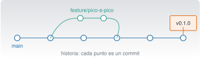

Git, GitHub y worktrees
C3 · Vía C
Versión 0.2.0 · editada el 23/10/2026 · comprobada el 23/10/2026 · Claude Code 2.1.309 (doc.) · pendiente de revisión

Objetivos y prerrequisitos
Objetivos. Al terminar la unidad sabrás:
- explicar qué es un repositorio, un commit, una rama y el área de preparación, y por qué el control de versiones es la red de seguridad de quien trabaja con un asistente de programación;
- seguir el ciclo
status → diff → add → commity revisar un cambio antes de confirmarlo; - crear ramas, integrarlas con merge o rebase y resolver un conflicto sencillo;
- recuperar trabajo con
restore,revertyreflog, distinguiendo lo seguro de lo destructivo; - usar GitHub: remotos, pull requests, etiquetas y una acción de comprobación automática;
- trabajar en paralelo con worktrees, también con Claude Code;
- completar el ejercicio central: rama → cambio hecho con Claude Code → pruebas → revisión del diff → integración.
Prerrequisitos. C2 · Preparación del entorno y terminal: Zsh o PowerShell, rutas y códigos de salida.
Tiempo orientativo. 6–8 horas. Nivel: intermedio. Herramientas: Git (2.55.0 en la redacción) y, para GitHub, una cuenta y el cliente gh (opcional). Los ejemplos funcionan igual en macOS y Windows; la sintaxis de Git no cambia entre sistemas, solo la de la shell.
Todas las órdenes de Git de esta unidad se ejecutaron en un repositorio temporal con Git 2.55.0 en macOS (23-10-2026), salvo las de GitHub (remote, push, pull, gh, pull requests, Actions), que necesitan una cuenta y red: se han contrastado con la documentación de GitHub y no se han ejecutado. Los mensajes literales de Git pueden variar de una versión a otra.
Temas de la unidad
- C3.1 Historia y fundamentos del control de versiones
- C3.2 Repositorio, directorio de trabajo, área de preparación y commits
- C3.3 Flujo básico: status, add, commit, diff, log y restore
- C3.4 Ramas: switch, branch, merge y rebase; resolución de conflictos
- C3.5 GitHub: remotos, fetch, pull, push, pull requests y revisión de código
- C3.6 Etiquetas y versiones, .gitignore y ficheros grandes
- C3.7 GitHub Actions y GitHub Pages
- C3.8 Estrategias de ramas, trabajo en equipo y recuperación de errores
- C3.9 Worktrees: concepto, creación, trabajo en paralelo y limpieza
- C3.10 Worktrees y Claude Code
Teoría breve
C3.1 Historia y fundamentos del control de versiones
Un sistema de control de versiones registra los cambios de un conjunto de ficheros a lo largo del tiempo para poder volver atrás, comparar versiones y trabajar varias personas sin pisarse. Sin él, la «versión» se resuelve con nombres de fichero (informe_v2_final_DEFINITIVO.docx), que no escala.
Git es distribuido: cada copia del repositorio contiene toda la historia, así que casi todo se hace sin red. GitHub es un servicio que aloja repositorios Git y añade colaboración (pull requests, revisión, automatización); no es lo mismo que Git.
¿Por qué importa con Claude Code? Un agente de programación edita ficheros y ejecuta comandos. Eso significa que puede equivocarse en tu disco. Git convierte cada error en algo visible (git diff) y reversible (restore, revert). Por eso la regla de este curso es: Claude Code trabaja dentro de un repositorio, en una rama, con el árbol limpio al empezar y con el diff revisado antes de cada commit. Claude Code tiene además sus propios puntos de control (/rewind), pero la documentación avisa de que no sustituyen a Git y no siguen los cambios hechos por comandos de la shell ni los remotos (Checkpointing 2026).
Pon a prueba lo anterior.
Git y GitHub son lo mismo: GitHub es el programa que instalas para controlar versiones.
Falso. Git es el sistema de control de versiones, que funciona en local. GitHub es un servicio que aloja repositorios Git y añade colaboración y automatización.
C3.2 Repositorio, directorio de trabajo, área de preparación y commits
Un repositorio es una carpeta con su historia, guardada en el subdirectorio oculto .git (no lo toques a mano). Los cambios pasan por tres zonas:
| Zona | Qué contiene | Cómo se llega |
|---|---|---|
| Directorio de trabajo | Los ficheros tal como los ves y editas | Editas |
| Área de preparación (staging, index) | Lo que irá en el próximo commit | git add |
| Repositorio | La historia: commits | git commit |
Un commit es una instantánea del proyecto con autor, fecha, mensaje y un identificador (un hash: 66098c9 es su forma abreviada). Cada commit apunta a su anterior, formando una cadena. Una rama es solo un nombre que apunta a un commit; HEAD indica dónde estás.
El área de preparación existe para que elijas qué entra en cada commit: un commit por idea, con un mensaje que diga qué y por qué. En este curso los mensajes son breves, en español y en imperativo: «Añade pico_a_pico», «Corrige el cálculo del RMS».
Pon a prueba lo anterior.
¿Para qué sirve el área de preparación?
- Para guardar copias de seguridad en la nube.
- Para elegir qué cambios entrarán en el próximo commit.
- Para sincronizar con GitHub.
- Para borrar ficheros del disco.
Permite construir commits coherentes: modificas varios ficheros, pero solo preparas (git add) los que forman parte de una misma idea.
C3.3 Flujo básico: status, add, commit, diff, log y restore
git init # crea un repositorio en la carpeta actual
git status # ¿qué ha cambiado? (úsalo todo el tiempo)
git diff # cambios aún NO preparados
git diff --staged # cambios preparados (lo que irá en el commit)
git add scripts/analiza.py # prepara un fichero (mejor que «git add .» a ciegas)
git commit -m "Añade pico_a_pico"
git log --oneline # historia resumida
git restore scripts/analiza.py # DESCARTA los cambios no preparados de ese ficheroTodas estas órdenes son idénticas en PowerShell. Esto es lo que se ve en el proyecto de ejemplo (salida real de Git 2.55.0, abreviada):
$ git status --short
M scripts/analiza.py
$ git diff --stat
scripts/analiza.py | 6 ++++++
$ git log --oneline
66098c9 Añade pico_a_pico
7804459 Primer commit: proyecto de la vigaLeer un diff. Las líneas con + se añaden y las con - se quitan; las cabeceras @@ indican dónde. Un diff se lee como una revisión de código: ¿hace lo que se pidió? ¿toca algo más? ¿añade dependencias, claves, ficheros generados? ¿borra pruebas?
restore
git restore fichero descarta sin avisar los cambios no confirmados del fichero y no se puede deshacer (Git no los tenía guardados). Haz git diff fichero antes, y si dudas, git stash (los guarda aparte) o copia el fichero. Con la opción --staged solo se quita del área de preparación y los cambios siguen en tu directorio de trabajo.
Cuándo no hacer git add .: si el árbol contiene ficheros que no quieres versionar (claves, resultados, entornos). Revisa git status y mira C3.6 sobre .gitignore.
Pon a prueba lo anterior.
Has preparado un cambio con git add. ¿Qué orden muestra exactamente lo que irá en el commit?
git diffgit loggit diff --stagedgit status --short
git diff muestra solo los cambios no preparados; git diff --staged muestra los preparados, es decir, el contenido del próximo commit.
git restore fichero se puede deshacer con git reflog.
Falso para cambios que nunca se confirmaron ni se guardaron con stash: Git no tiene copia de ellos. reflog recupera commits perdidos, no ediciones sin confirmar.
C3.4 Ramas: switch, branch, merge y rebase; resolución de conflictos
Una rama permite trabajar en algo sin tocar la línea principal (main). Es barata: solo un nombre que apunta a un commit.
git switch -c feature/pico-a-pico # crea la rama y se cambia a ella
git branch # lista ramas (* marca la actual)
git switch main # vuelve a main
git merge --ff-only feature/pico-a-pico # integra solo si basta con avanzar el puntero
git branch -d feature/pico-a-pico # borra la rama YA integrada (-d se niega si no lo está)Merge o rebase. Dos maneras de integrar el trabajo de una rama:
merge |
rebase |
|
|---|---|---|
| Qué hace | Une dos historias con un commit de fusión (o avanza el puntero si es posible) | Reescribe tus commits para colocarlos sobre la punta de otra rama |
| Historia | Conserva lo ocurrido, con bifurcaciones | Lineal y limpia |
| Riesgo | Bajo | Reescribe la historia: no lo hagas sobre commits ya compartidos |
Prueba con el proyecto de ejemplo: tras git switch -c rama-c, un commit en ella, otro en main, y git rebase main desde rama-c, la salida es Successfully rebased and updated refs/heads/rama-c.; un git merge --no-ff rama-c desde main crea un commit de fusión y el grafo (git log --oneline --graph) muestra la bifurcación.
Conflictos. Si dos ramas cambian la misma línea de un fichero, Git no sabe cuál elegir y lo marca:
$ git merge rama-a
CONFLICT (content): Merge conflict in scripts/analiza.py
Automatic merge failed; fix conflicts and then commit the result.
$ git status --short
UU scripts/analiza.pyEl fichero contiene marcas <<<<<<< HEAD, ======= y >>>>>>> rama-a con las dos versiones. Resolver es decidir qué queda (una, la otra o una mezcla), borrar las marcas, ejecutar las pruebas, git add del fichero y git commit. Si te pierdes, git merge --abort deja todo como antes (comprobado). Un asistente puede ayudar a proponer la resolución, pero la decisión sobre qué comportamiento es el correcto es tuya.
- Resolver un conflicto «aceptando todo lo mío» sin leer lo del otro: se pierde su trabajo.
- Commitear con marcas de conflicto (
<<<<<<<) dentro del fichero: busca congrep -n "<<<<<<<" -r .antes de confirmar. rebasede una rama que ya publicaste: obliga a otros a rehacer su historia.
Pon a prueba lo anterior.
Has hecho git merge rama-a y aparece CONFLICT. Estás nervioso y no sabes qué hacer. ¿Cuál es la salida segura?
git reset --hard origin/main, que lo deja todo limpio.- Borrar la carpeta y clonar de nuevo.
git add .ygit commit, para que desaparezca el aviso.git merge --abort, que devuelve el repositorio al estado anterior al merge.
git merge --abort deshace el intento de fusión sin perder lo que tenías antes. reset --hard descarta cambios sin confirmar; confirmar a ciegas guardaría las marcas de conflicto en el fichero.
C3.5 GitHub: remotos, fetch, pull, push, pull requests y revisión de código
Un remoto es una copia del repositorio en otro sitio (normalmente GitHub), llamada por defecto origin. Cuatro órdenes lo gobiernan:
| Orden | Qué hace | ¿Modifica mi trabajo local? |
|---|---|---|
git clone URL |
Copia un repositorio completo | Crea una carpeta nueva |
git fetch |
Descarga novedades sin integrarlas | No |
git pull |
fetch + integración en tu rama |
Sí |
git push |
Envía tus commits al remoto | Modifica el remoto |
fetch es el que se puede ejecutar con tranquilidad para ver qué hay antes de decidir. git push publica; en este curso Claude Code no hace push ni abre PR sin que lo pidas expresamente, y la configuración del proyecto lo exige (se verá en C4 y C7). Sin remoto configurado, Git responde fatal: No configured push destination (comprobado).
Un pull request (PR) es una propuesta de integrar los cambios de una rama en otra: permite discutirlos y revisarlos antes de fusionar (About pull requests 2026). Un PR en borrador (draft) no puede fusionarse hasta marcarlo como listo. Un flujo sano en equipo: rama → commits pequeños → PR con descripción (qué, por qué, cómo se probó) → revisión → pruebas automáticas en verde → fusión.
Revisión de código. Mira el diff de arriba abajo, busca lo que no se pidió, comprueba que hay pruebas y que pasan. Esto vale igual para el código de una persona que para el de un asistente (C0.9 y C5).
El cliente gh de GitHub permite hacer parte de esto desde la terminal (gh pr create, gh pr view); sus órdenes que modifican GitHub (crear PR, comentar, fusionar) requieren tu confirmación en este proyecto. No se han ejecutado en la redacción de esta unidad.
Pon a prueba lo anterior.
Quieres ver qué ha cambiado en origin sin tocar tus ficheros locales. ¿Qué haces?
git fetchgit pullgit pushgit merge --abort
git fetch descarga la información pero no la integra. git pull integra (fusiona o reubica) y puede cambiar tus ficheros.
C3.6 Etiquetas y versiones, .gitignore y ficheros grandes
Etiquetas (tags). Marcan un commit concreto, normalmente una versión. Las anotadas guardan autor, fecha y mensaje:
git tag -a v0.1.0 -m "Primera versión" # crea la etiqueta
git tag # lista las etiquetas
git show v0.1.0 --stat # muestra la etiqueta y su commitUna versión (release) en GitHub se crea sobre una etiqueta y puede adjuntar ficheros. Se suele seguir el versionado semántico MAYOR.MENOR.PARCHE (1.4.2): sube el MAYOR si rompes compatibilidad, el MENOR si añades algo compatible y el PARCHE si corriges un error.
.gitignore. Lista de patrones de ficheros que Git ignora. Debe incluir lo generado (resultados, informes compilados, entornos), lo local (ajustes personales) y los secretos (.env). Se comprueba con git check-ignore -v fichero: en el proyecto de ejemplo, .env y resultados/x.csv aparecen como ignorados (.gitignore:5:.env y .gitignore:2:resultados/) y no figuran en git status.
Si un fichero con una clave llega a un repositorio compartido, considéralo comprometido: revoca la clave y crea otra. Reescribir la historia ayuda a limpiar, pero otras copias, forks o cachés pueden haberla guardado ya.
Ficheros grandes. Git guarda cada versión de cada fichero: un fichero binario grande que cambia a menudo hincha el repositorio. Para datos grandes, usa almacenamiento externo o Git LFS; para resultados reproducibles, versiona el código que los genera, no los resultados. (Ojo: la documentación de worktrees de Claude Code advierte de que, si usas git lfs install --local, los worktrees que crea contienen punteros LFS en lugar de los ficheros reales hasta que ejecutes git lfs pull (Run parallel sessions with worktrees 2026).)
Pon a prueba lo anterior.
Corriges un error sin cambiar la interfaz. Tu versión actual es 1.4.2. ¿Cuál es la siguiente según el versionado semántico?
- 2.0.0
- 1.4.3
- 1.5.0
- 1.4.2-bis
Un arreglo compatible sube el PARCHE: 1.4.3. El MENOR (1.5.0) es para añadir funciones compatibles y el MAYOR (2.0.0) para cambios que rompen compatibilidad.
C3.7 GitHub Actions y GitHub Pages
GitHub Actions ejecuta automáticamente tareas (pruebas, publicación) cuando ocurre algo en el repositorio. Cada flujo de trabajo (workflow) es un fichero YAML en .github/workflows/, con: un disparador (on:), uno o más trabajos (jobs:), cada uno en un ejecutor (runs-on:) y con una lista de pasos (steps:) que ejecutan órdenes (run:) o usan acciones ya hechas (uses:) (Quickstart for GitHub Actions 2026).
Un flujo mínimo que ejecuta las pruebas del proyecto de ejemplo en cada push (no se ha ejecutado en GitHub; la sintaxis se ha contrastado con la documentación y el YAML se ha validado en local):
name: Pruebas
on: [push, pull_request]
jobs:
pytest:
runs-on: ubuntu-latest
steps:
- uses: actions/checkout@v6
- name: Instalar dependencias
run: python3 -m pip install numpy pytest
- name: Ejecutar pruebas
run: python3 -m pytest testsDos puntos de seguridad: lo que escribe el flujo corre en máquinas de GitHub con los secretos que le des, así que no pongas claves en el YAML (usa los secrets del repositorio) y revisa las acciones de terceros que uses (una versión etiquetada puede cambiar; las más estrictas fijan el commit).
GitHub Pages sirve páginas estáticas desde un repositorio. Esta web se publica así: el flujo publish.yml se dispara con cada push a main, instala Quarto (versión fija) y publica la rama gh-pages. Como no tiene Julia, lee los resultados de _freeze/: por eso se commitean (véase CLAUDE.md).
Pon a prueba lo anterior.
¿Dónde se guardan los ficheros de flujo de trabajo de GitHub Actions?
- En la raíz, con el nombre
actions.yml. - En
.git/workflows/. - En
.github/workflows/, con extensión.ymlo.yaml. - En la web de GitHub, no en el repositorio.
Según la documentación de GitHub, en el directorio .github/workflows del repositorio, con extensión .yml o .yaml.
C3.8 Estrategias de ramas, trabajo en equipo y recuperación de errores
Estrategias de ramas. Para un equipo pequeño basta con ramas de tema cortas: main siempre funciona, cada cambio vive en una rama (feature/…, fix/…), se integra por PR y se borra. Cuanto más viva una rama, más se aleja de main y más dolorosa será la integración.
Buenas prácticas de colaboración. Commits pequeños y con sentido; mensajes que expliquen el porqué; fetch antes de empezar; pruebas antes de integrar; no reescribir historia publicada; revisar el código de los demás con el mismo rigor que el propio.
Recuperación: qué deshace qué.
| Situación | Orden | ¿Seguro? |
|---|---|---|
| Descartar cambios sin confirmar de un fichero | git restore fichero |
⚠ Irreversible |
| Quitar un fichero del área de preparación | git restore --staged fichero |
✔ |
| Guardar cambios aparte y limpiar el árbol | git stash · git stash pop |
✔ (probado) |
| Deshacer un commit ya hecho creando otro inverso | git revert COMMIT |
✔ No reescribe historia (probado) |
Ver dónde ha estado HEAD (commits «perdidos») |
git reflog |
✔ Solo lectura |
| Mover la rama hacia atrás y descartar cambios | git reset --hard COMMIT |
❌ Destructivo |
| Reescribir el remoto | git push --force |
❌ Puede borrar trabajo ajeno |
git reset --hard, git clean -fd, git checkout -- . y git push --force descartan o sobrescriben trabajo sin posibilidad de recuperarlo desde Git. En este proyecto la configuración de Claude Code pide confirmación para todas (C4). Antes de ejecutar una de ellas pregunta: ¿qué se pierde?, ¿existe otra copia?, ¿puedo usar revert o stash en su lugar?
Pon a prueba lo anterior.
Un commit ya compartido introdujo un error. ¿Cómo lo deshaces sin reescribir la historia?
git revert COMMIT, que añade un commit que invierte el cambio.git reset --hard COMMIT~1ygit push --force.- Borrar el repositorio y clonar de nuevo.
- Editar el commit antiguo a mano en
.git.
revert crea un commit nuevo con el cambio inverso (comprobado: produce Revert "Añade pico_a_pico"). reset --hard + push --force reescribe la historia compartida.
C3.9 Worktrees: concepto, creación, trabajo en paralelo y limpieza
Un worktree es un directorio de trabajo adicional del mismo repositorio, con su propia rama y sus propios ficheros, que comparte la historia y el remoto. Permite tener abierta la rama de una funcionalidad y la de un arreglo urgente a la vez, sin stash ni cambios de rama.
git worktree add ../viga-otro -b feature/otro # crea la carpeta ../viga-otro con una rama nueva
git worktree list # lista el principal y los vinculados
git worktree remove ../viga-otro # lo elimina (se niega si hay cambios sin confirmar)Probado en el proyecto de ejemplo: git worktree add imprime HEAD is now at 66098c9 Añade pico_a_pico y git worktree list muestra los dos directorios con sus ramas. Reglas: una misma rama no puede estar extraída en dos worktrees a la vez; los ficheros ignorados (.env, el entorno de Python) no se copian, así que cada worktree necesita su propia preparación; y elimina los worktrees con git worktree remove, no borrando la carpeta a mano.
C3.10 Worktrees y Claude Code
Claude Code integra los worktrees para ejecutar sesiones en paralelo aisladas (Run parallel sessions with worktrees 2026). Según su documentación (versión 2.1.309, consultada el 23-10-2026):
claude --worktree nombre(o-w) crea un worktree en.claude/worktrees/<nombre>/, en una rama nuevaworktree-<nombre>, y arranca Claude allí. Conviene añadir.claude/worktrees/al.gitignore.- Para llevar a cada worktree ficheros ignorados como
.env, se lista en un fichero.worktreeinclude(con sintaxis de.gitignore); solo se copian los que además están ignorados. - Al salir, si el worktree está limpio y la sesión no tiene nombre, se elimina; si tiene trabajo, te pregunta si conservarlo o borrarlo (borrarlo elimina también la rama con su trabajo).
- Las sesiones aisladas bloquean ediciones y comandos de Git que apunten al directorio principal; los comandos de shell como
cpo una redirección no se controlan así y siguen sujetos a tus permisos. - Los subagentes pueden ejecutarse cada uno en su worktree (
isolation: worktree); esto se ve en C7 y C8. claude --worktree "#1234"crea el worktree a partir de una pull request.
Los worktrees aíslan ficheros: no son lo mismo que los subagentes (que reparten trabajo dentro de una sesión) ni que los equipos de agentes (experimentales). Tampoco sustituyen a los permisos: cada sesión sigue pidiendo confirmación según su configuración.
Pon a prueba lo anterior.
Un worktree nuevo contiene automáticamente tu fichero .env y tu entorno virtual de Python.
Falso. Un worktree es una copia limpia de lo versionado. Los ficheros ignorados no se copian salvo que los listes en .worktreeinclude (en worktrees creados por Claude Code), y el entorno hay que preparar cada vez.
Práctica guiada
Local gratuita (los pasos 1–6 no necesitan red ni cuenta) · Requiere cuenta (el paso 7 con Claude Code, y el opcional de GitHub).
Práctica · rama → cambio con Claude Code → pruebas → revisión del diff → integración
Ficha. Objetivo: añadir una función al proyecto de ejemplo con ayuda de Claude Code sin perder nunca el control: rama aislada, pruebas, diff revisado e integración consciente. Archivos: una copia del proyecto de C2 (claude/c2-terminal/_ejemplo/proyecto-viga/). Versiones: Git, Python con numpy y pytest; Claude Code (C4) para el paso 5. Resultado esperado: una rama integrada en main con una función pico_a_pico, su prueba y el valor 2,56584 m/s² para los datos de ejemplo. Problemas frecuentes: trabajar con el árbol sucio; aceptar cambios en ficheros que no se pidieron.
1. Prepara el repositorio (copia el proyecto a una carpeta nueva y conviértela en repositorio):
cd ~/viga && git init -b main && git add . && git commit -m "Primer commit: proyecto de la viga"
git status --short # debe quedar vacío: árbol limpioPowerShell: los mismos comandos de Git (cambia ~/viga por tu ruta). Si Git no conoce tu nombre, configúralo para este repositorio con git config user.name "…" y git config user.email "…".
2. Crea la rama: git switch -c feature/pico-a-pico.
3. Define criterios de aceptación antes de pedir nada:
- Existe
pico_a_pico(a)enscripts/analiza.py: devuelvemax - minen m/s². resumen.csvincluye una columna nuevapico_a_pico_m_s2.- Hay una prueba nueva que cubre la función y otra que comprueba la columna.
- No se toca ningún otro fichero ni se añade ninguna dependencia.
4. Comprueba que las pruebas actuales pasan (línea base): uv run --with numpy --with pytest pytest tests (instala lo necesario solo para esa ejecución; el Python del sistema no suele traer pytest). Esperado: 6 passed.
5. Pide el cambio a Claude Code (en C4 verás cómo se arranca y cómo funcionan los permisos; lee cada propuesta antes de aprobarla). Un prompt posible, ilustrativo (las respuestas reales varían):
Estoy en la rama
feature/pico-a-picodel proyecto de la viga. Añade ascripts/analiza.pyuna funciónpico_a_pico(a)que devuelvamax - min, inclúyela como columnapico_a_pico_m_s2enresumen.csv(trasrms_m_s2) y añade pruebas entests/test_analiza.py. No modifiques ningún otro fichero, no añadas dependencias y no hagas commits. Ejecuta las pruebas y dime el resultado.
6. Revisa antes de confirmar. Con Claude Code parado:
git status --short # ¿solo scripts/analiza.py y tests/test_analiza.py?
git diff # lee TODO el diff
uv run --with numpy --with pytest pytest tests # ¿pasan?; ¿cuántas hay ahora?Preguntas de revisión: ¿hay ficheros no pedidos?, ¿se han borrado o debilitado pruebas (para que «pasen» a toda costa)?, ¿se han hecho cambios en resumen.csv o en el orden de columnas que rompen algo?, ¿añadió una dependencia? Si algo no está claro, pregúntaselo o descártalo con git restore (tras leer el diff).
7. Confirma e integra:
git add scripts/analiza.py tests/test_analiza.py
git diff --staged # último vistazo a lo que se confirma
git commit -m "Añade pico_a_pico"
git switch main
git merge --ff-only feature/pico-a-pico
git branch -d feature/pico-a-picoResultado esperado. Con la solución de referencia pasan 8 pruebas (las 6 de partida más 2 nuevas). Con los datos de ejemplo, pico_a_pico vale 2,56584 m/s² (máximo 1,31393, mínimo −1,25191; calculado con la función de referencia el 23-10-2026). Si tu valor difiere, revisa la función antes de integrar.
Material del profesorado: la solución de referencia está en claude/c3-git/_ejemplo/solucion-pico-a-pico.patch (se comprueba con git apply --check).
Variante con conflicto (opcional): en una segunda rama cambia la misma línea del docstring, fusiona y resuelve el conflicto a mano, sin aceptar «todo lo mío».
Qué has aprendido: Claude Code propone; tú revisas el diff, ejecutas las pruebas y decides qué se integra. Git hace que cualquier error sea visible y reversible.
«Pídeselo a Claude»
Acabo de terminar un cambio en mi rama y quiero revisarlo antes de integrarlo. Te pego la salida de git status --short y de git diff. Dime, solo leyendo el diff: 1) qué hace el cambio en dos frases; 2) qué ficheros toca y si alguno no parece relacionado; 3) qué riesgos ves (secretos, dependencias nuevas, pruebas borradas, comportamiento que cambia); 4) qué pruebas faltarían. No propongas ninguna orden destructiva y marca lo que no puedas saber solo con el diff.
Verifica.
- ¿Coincide su resumen con tu lectura del diff? Si dice algo que no está en el diff, descártalo.
- ¿Encontró algo que tú no viste? Compruébalo tú en el diff, no te fíes.
- ¿Ha marcado lo que no puede saber (por ejemplo, el comportamiento en tiempo de ejecución)?
- ¿Sugirió alguna orden destructiva a pesar de pedirle que no? Si es así, anótalo: es un ejemplo para C4.
Ejercicios
Ciclo básico. En un repositorio nuevo, haz tres commits que cuenten una historia (crear fichero, modificarlo, añadir otro). Comprueba con
git log --onelineygit log -p -1.Conflicto. Provoca un conflicto en una línea entre dos ramas, léelo, resuélvelo con una versión combinada y deja las pruebas en verde. Después prueba
git merge --aborten un segundo intento y verifica congit statusque no queda nada pendiente.Rebase seguro. Con una rama de tema y un
mainque ha avanzado, hazgit rebase maindesde la rama y comparagit log --oneline --graphantes y después. ¿Cuándo no lo harías?NotaSoluciónAntes, el grafo mostraba una bifurcación; después, la rama queda encima de
mainsin bifurcación. No lo haría con commits que ya haya compartido otra persona, porque rehacer su historia obliga a los demás a reconciliar.Recuperación. Borra el último commit con
git reset --hard HEAD~1en un repositorio de pruebas (jamás en uno con trabajo real) y recupéralo congit reflogygit reset --hard HASH. Explica por qué funciona y cuándo no.NotaSoluciónreflogguarda dónde ha estadoHEAD, así que el commit «perdido» sigue existiendo un tiempo (Git lo limpia eventualmente). No habría recuperación para cambios sin confirmar, que nunca estuvieron en un commit.Worktrees. Crea un worktree con
git worktree add, haz un commit en él, vuelve al principal e intégralo conmerge. Elimínalo congit worktree removey confirma congit worktree list.Etiqueta. Etiqueta con
v0.1.0la versión integrada y explica a qué número pasaría el proyecto si corriges un error y después añades una función compatible.NotaSoluciónCorregir un error: v0.1.1. Añadir una función compatible: v0.2.0 (sube el MENOR y el PARCHE vuelve a 0).
La doy por superada si…
- Explico por qué Claude Code debe trabajar dentro de un repositorio, en una rama y con el árbol limpio.
- Hago un ciclo
status → diff → add → commity leo un diff como una revisión de código. - Creo y fusiono ramas, y resuelvo un conflicto sin perder el trabajo de nadie.
- Distingo
restore,revert,stash,reset --hardypush --forcey sé cuáles son destructivos. - Sé qué hace
fetch,pullypushy quepushes una acción que publica. - Escribo un
.gitignorey sé qué hacer si un secreto llega a un repositorio. - Leo un flujo de GitHub Actions sencillo y sé dónde viven.
- Creo y limpio un worktree y sé qué aísla y qué no.
- Completo el ejercicio rama → Claude Code → pruebas → diff → integración, con
pico_a_pico= 2,56584 m/s².
Referencias de esta unidad
Documentación consultada el 23-10-2026: Pro Git (historia), Git: git-worktree, GitHub Docs sobre pull requests y GitHub Actions, y la documentación de Claude Code sobre worktrees y puntos de control.
Referencias
Son las mismas que aparecen en el margen, junto al texto. La lista completa del curso, con el estado de verificación de cada ficha, está en R5.
About pull requests. 2026. GitHub Docs, consultada el 23-10-2026. https://docs.github.com/en/pull-requests/collaborating-with-pull-requests/proposing-changes-to-your-work-with-pull-requests/about-pull-requests.
Checkpointing. 2026. Documentación de Claude Code (Anthropic), consultada el 23-10-2026. https://code.claude.com/docs/en/checkpointing.
Quickstart for GitHub Actions. 2026. GitHub Docs, consultada el 23-10-2026. https://docs.github.com/en/actions/get-started/quickstart.
Run parallel sessions with worktrees. 2026. Documentación de Claude Code (Anthropic), consultada el 23-10-2026. https://code.claude.com/docs/en/worktrees.